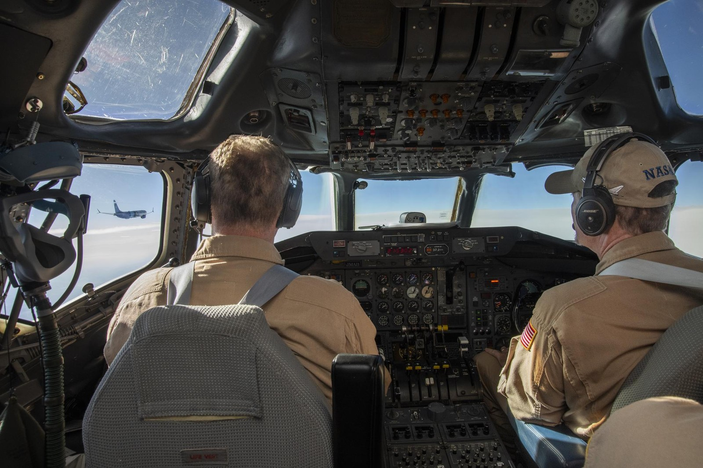
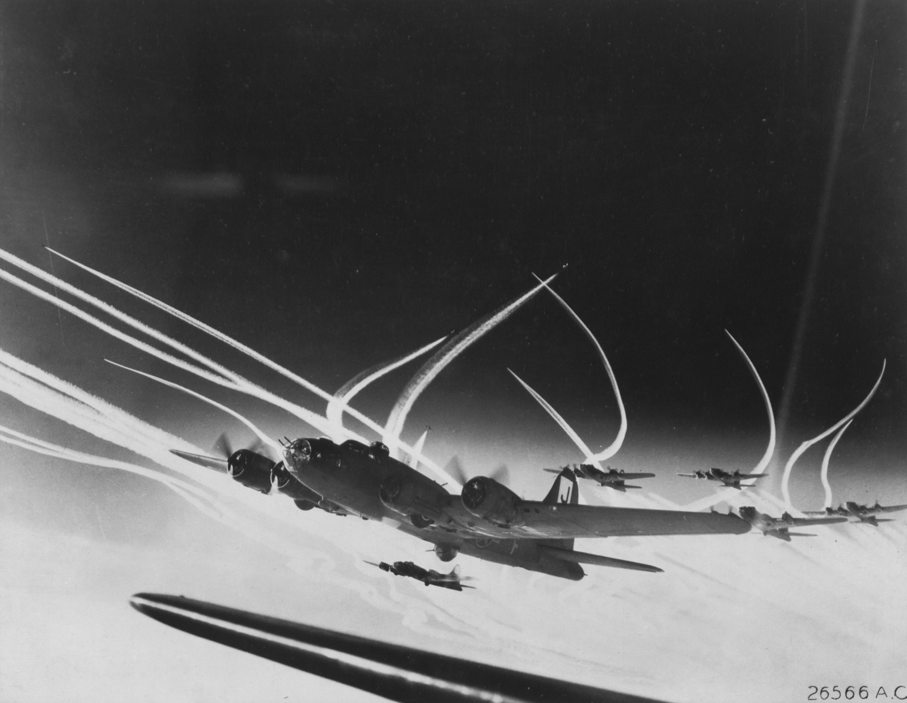
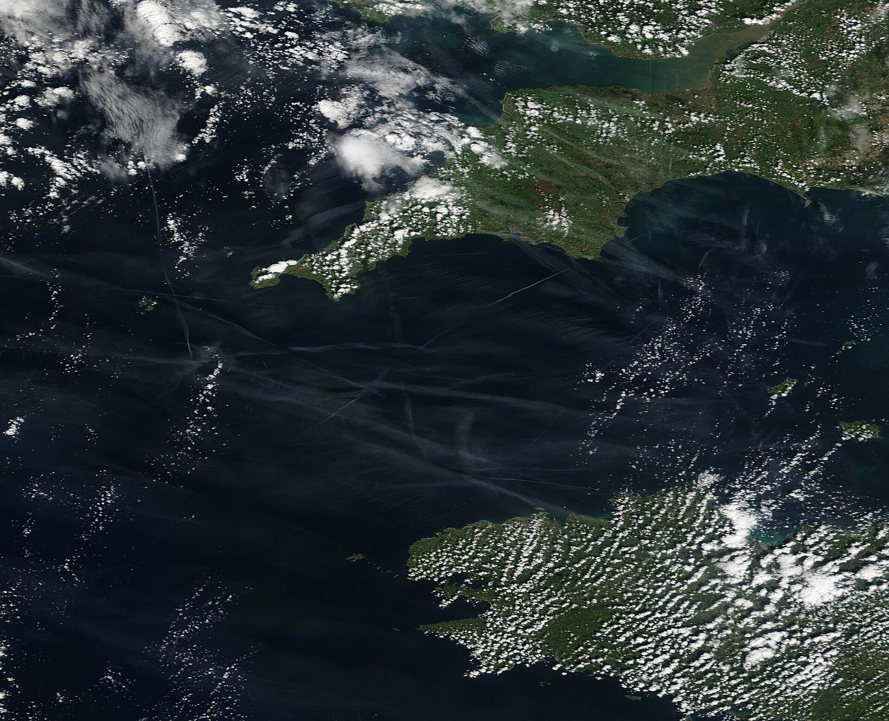

[하늘길, 번외편②] 1915년 남티롤에서 2025년 대서양까지, 비행운 110년의 과학과 회피 시험
등유 1kg에 수증기 1.25kg, 영하 40도 하늘의 얼음 구름
비이산화탄소 감시와 2026년 비행운 감축 지원안
AI경제저널=김갑봉 기자 | 2026년 7월 17일 유럽연합 집행위원회가 배출권거래제 개정안을 냈다. 개정안은 항공 배출권 지원에 비행운 기후 영향 감축을 넣고 2033년까지 쓸 배출권 최대 300만 개를 떼자고 했다. 유럽의회가 이 안을 심의하고 있다(유럽연합 집행위원회·유럽의회).
집행위원회는 항공이 이산화탄소 못지않은 비이산화탄소 영향을 낸다고 적었다. 유럽연합은 2025년 1월 1일부터 항공사가 비행운과 질소산화물, 그을음의 영향을 항공편마다 이산화탄소로 환산해 보고하게 했다(유럽연합 집행위원회).
유럽연합은 유럽경제지역 안 노선과 스위스·영국행 노선에 먼저 의무를 지우고 역외 노선은 2년 미뤘다. 집행위원회는 2027년 말까지 결과 보고서를 낸다(유럽연합 집행위원회).
배기가스가 얼음 결정이 되기까지
비행운은 영어로 응결 흔적이라는 뜻의 콘트레일(contrail)이다. 독일항공우주센터 울리히 슈만은 1996년 논문에서 등유 1kg이 탈 때 수증기 1.25kg이 나온다고 정리했다(독일항공우주센터).
뜨겁고 축축한 배기가스가 찬 바깥 공기와 섞이면 빠르게 식는다. 수증기는 미세 입자에 엉겨 물방울이 되고, 물방울은 곧 얼어 얼음 결정이 된다. 이 얼음 결정이 눈에 보이는 하얀 줄이다(미국 연방항공청·환경보호청·국립해양대기청).
슈만은 비행운이 대개 영하 40도보다 찬 공기에서 생긴다고 적었다. 문턱 온도는 바깥 기압과 습도, 엔진이 내놓는 수증기와 열의 비율에 따라 달라진다. 같은 비행기라도 하늘에 따라 줄을 남기기도 하고 남기지 않기도 하는 까닭이다.

1915년 남티롤, 처음 기록된 비행운
슈만의 정리를 보면 비행운 연구는 1919년에 시작됐다. 그해 R. 에텐라이히가 1차 세계대전 중인 1915년 남티롤에서 본 비행운을 처음 보고했다. 배기가스에서 적운 같은 띠가 맺혀 오래 보였다는 기록이다(독일항공우주센터).
비행기가 중위도에서 비행운이 생기는 고도까지 오른 것도 1914~1919년이었다. 1919년에는 조종사 체노 디머가 뮌헨 상공 최고 9300m에서 남긴 비행운이 큰 관심을 끌었다(독일항공우주센터).
슈만은 1940년대 들어 항공기 탐지 문제가 관심을 끌면서 비행운 논문이 잇따랐다고 적었다. 에른스트 슈미트도 1941년 엔진 배기가스가 얼음 안개를 만드는 원리를 다뤘다(독일항공우주센터).
H. 애플먼은 1953년 제트기 비행운이 생기는 조건을 정리했다. 슈미트와 애플먼이 따로 세운 이론을 슈미트·애플먼 기준이라 부른다. 애플먼의 도표는 바깥 기온과 습도로 제트기가 비행운을 남길지 가늠하게 했다(독일항공우주센터·글로브 프로그램).
1944년 5월 11일, 1444대의 꼬리
1944년 5월 11일 영국 남동부 비행장들에서 항공기 1444대가 이륙했다. 영국 랭커스터대와 환경청 연구진은 1943~1945년 1000대 넘게 나선 폭격을 살폈고 이날을 가장 좋은 사례로 꼽았다(버밍엄대).
연구진은 2012년 논문에서 미 육군항공대의 낮 폭격이 짙고 오래 남는 비행운을 만들었다고 밝혔다. 편대가 많이 지나간 관측소는 바람 위쪽 관측소보다 7~13시(세계시) 기온 오름폭이 0.8도 작았다(랭커스터대 연구진·버밍엄대).
연구진은 사건 하나로 비행운의 기후 영향을 단정할 수 없다고 덧붙였다. 롭 매켄지 교수는 연합군 폭격이 뜻하지 않은 환경 실험이었다고 말했다. 표적을 향하던 폭격 편대의 하얀 꼬리가 뒷날 기후 연구의 자료가 된 셈이다.

2018년 항공 온난화 1위, 비행운 권운
바깥 공기가 건조하면 비행운은 몇 분 안에 사라진다. 얼음에 과포화한 습한 하늘에서는 몇 시간에서 며칠까지 남아 퍼지며 비행운 권운이 된다(미국 연방항공청·독일항공우주센터).
맨체스터메트로폴리탄대 데이비드 리 연구진은 2021년 논문에서 2018년 기준 항공의 순 유효복사강제력을 제곱미터당 100.9밀리와트로 계산했다. 이 가운데 비이산화탄소 영향이 66%였다(맨체스터메트로폴리탄대 연구진).
비행운 권운이 57.4밀리와트로 가장 컸지만 범위가 17~98밀리와트로 넓었다. 이산화탄소는 34.3밀리와트였다(맨체스터메트로폴리탄대 연구진).
독일항공우주센터 리자 보크·울리케 부르크하르트는 2019년 논문에서 2050년 비행운 권운 복사강제력이 2006년의 약 3배가 된다고 내다봤다. 같은 기간 비행 거리가 약 4배로 는다는 가정이다(독일항공우주센터 연구진).

항공편 2.2%와 2025년 대서양 회피 시험
임페리얼칼리지런던 연구진은 2020년 논문에서 2012~2013년 일본 영공 비행을 분석해 항공편 2.2%가 비행운 강제력의 80%를 만든다고 밝혔다. 1.7%만 고도를 바꿔도 강제력을 최대 59.3% 줄이고 연료는 0.014% 더 쓴다고 모의 계산했다(임페리얼칼리지런던 연구진).
구글 리서치와 아메리칸항공 등은 2025년 1~5월 미국발 유럽행 노선에서 무작위 대조 시험을 했다. 회피 대상으로 배정된 1232편은 대조군 1172편보다 비행운 생성률이 11.6% 낮았다(구글 리서치 연구진).
운항관리사가 회피 계획을 내준 비행은 190편, 계획대로 난 비행은 112편이었다. 112편은 대조군보다 생성률이 62.0% 낮았고 연료 차이는 0.02%로 통계적 의미가 없었다. 논문은 공개 심사 뒤 게재 승인을 받았다(구글 리서치 연구진).
에어프랑스는 2026년 2~4월 북대서양 항공편 약 4300편 시험에서 비행운 기후 영향을 전체로 8%, 경로를 바꾼 130편에서 57% 줄였다고 발표했다. 회피 효과는 영향이 큰 비행을 골라 경로를 바꿀 때 커진다는 뜻이다. 남티롤의 하얀 띠는 110년 뒤 항공편마다 재는 기후 장부의 한 줄이 됐다.
참고문헌
- Ulrich Schumann(당시 독일항공우주연구소 대기물리연구소, 오버파펜호펜), "On conditions for contrail formation from aircraft exhausts", 『Meteorologische Zeitschrift』 5권 1호, 1996년 3월, 4~23쪽. https://doi.org/10.1127/metz/5/1996/4
- Ernst Schmidt(독일활공연구소, 브라운슈바이크), 「Die Entstehung von Eisnebel aus den Auspuffgasen von Flugmotoren」, 『Schriften der Deutschen Akademie der Luftfahrtforschung』 5권 44호, Verlag R. Oldenbourg(뮌헨), 1941년, 1~15쪽. https://elib.dlr.de/107948/
- H. Appleman, "The formation of exhaust condensation trails by jet aircraft", 『Bulletin of the American Meteorological Society』 34권 1호, 1953년, 14~20쪽(저자 소속 미 공군 기상단 본부). https://doi.org/10.1175/1520-0477-34.1.14
- A. C. Ryan·A. R. MacKenzie·S. Watkins·R. Timmis(랭커스터대 외), "World War II contrails: a case study of aviation-induced cloudiness", 『International Journal of Climatology』 32권 11호, 2012년(2011년 7월 온라인 공개), 1745~1753쪽. https://doi.org/10.1002/joc.2392 (랭커스터대 저장소 https://eprints.lancs.ac.uk/id/eprint/62245/)
- D. S. Lee 외(맨체스터메트로폴리탄대 외), "The contribution of global aviation to anthropogenic climate forcing for 2000 to 2018", 『Atmospheric Environment』 244권, 2021년, 117834. https://doi.org/10.1016/j.atmosenv.2020.117834 (화이트로즈 저장소 수락 원고 https://eprints.whiterose.ac.uk/165692/)
- Lisa Bock·Ulrike Burkhardt(독일항공우주센터), "Contrail cirrus radiative forcing for future air traffic", 『Atmospheric Chemistry and Physics』 19권 12호, 2019년 6월 27일, 8163~8174쪽. https://doi.org/10.5194/acp-19-8163-2019
- Roger Teoh·Ulrich Schumann·Arnab Majumdar·Marc E. J. Stettler(임페리얼칼리지런던 외), "Mitigating the climate forcing of aircraft contrails by small-scale diversions and technology adoption", 『Environmental Science & Technology』 54권 5호, 2020년 2월 12일, 2941~2950쪽(자료는 2012년 5월~2013년 3월 일본 영공 비행). https://doi.org/10.1021/acs.est.9b05608 (임페리얼칼리지 저장소 https://spiral.imperial.ac.uk/handle/10044/1/78643)
- Tharun Sankar 외(구글 리서치·Contrails.org·임페리얼칼리지런던·아메리칸항공·Flightkeys), "Efficacy of Scalable Airline-led Contrail Avoidance", arXiv 2603.06909v1, 2026년 3월 6일. https://arxiv.org/html/2603.06909v1 / 같은 원고 JECATS 토론 원고 jecats-2026-4(2026년 4월 21일 공개 토론 시작, 심사 의견 2026년 5월 25일·6월 30일, 저자 답변 7월 22일, 수정본 게재 승인, 2026년 11월 18일 기준 최종본 미게재). https://doi.org/10.5194/jecats-2026-4
- European Commission, 「Proposal for a Directive of the European Parliament and of the Council amending Directive 2003/87/EC and Decision (EU) 2015/1814 as regards driving competitiveness and cost-effective decarbonisation」, COM(2026) 616 final, 2026/0212(COD), 2026년 7월 17일(제1조 (3)(a)로 갈음하는 제3c조 6항: 2033년 12월 31일까지 배출권 최대 300만 개를 비행운 기후 영향 감축에 씀). 유럽연합 이사회 접수본 ST 12073/26(2026년 7월 20일) https://data.consilium.europa.eu/doc/document/ST-12073-2026-INIT/en/pdf / 네덜란드 상원 공개 사본 https://www.eerstekamer.nl/bijlage/20260904/com_2026_616_proposal_for_a/document3/f=/vn0ne2c1g9ti.pdf
- European Commission, "Reducing emissions from aviation", 2026년 11월 18일 열람. https://climate.ec.europa.eu/areas-action/transport-decarbonisation/reducing-emissions-aviation_en
- European Commission, "New monitoring rules agreed for the EU ETS, including non-CO₂ emissions from the aviation sector", 2024년 8월 30일. https://climate.ec.europa.eu/news-other-reads/news/new-monitoring-rules-agreed-eu-ets-including-non-co2-emissions-aviation-sector-2024-08-30_en
- U.S. Federal Aviation Administration·Environmental Protection Agency·National Oceanic and Atmospheric Administration, "Contrails Fact Sheet", 2026년 11월 17일 열람. https://www.faa.gov/contrails/fact-sheet
- The GLOBE Program, "Appleman Chart Student", 2026년 11월 17일 열람. https://globe.gov/web/s-cool/home/observation-and-reporting/contrails/appleman-chart-student
- The GLOBE Program, "History of Contrails", 2026년 11월 18일 열람. https://www.globe.gov/web/s-cool/home/contrail-investigation/history-of-contrails
- European Parliament Legislative Observatory, 「2026/0212(COD) EU Emissions Trading System and market stability reserve: competitiveness and cost-effective decarbonisation」, 2026년 11월 18일 열람(소관 환경·기후·식품안전위원회, 보고자 페터 리제 2026년 9월 4일 지명, 상태 「Awaiting committee decision」). https://oeil.europarl.europa.eu/oeil/en/procedure-file?reference=2026%2F0212%28COD%29
- Air France, "Research: Air France shares the results of a large-scale testing program aimed at better understanding and reducing the impact of contrails", 2026년 9월 17일(회사 발표, 유럽연합 공동 지원 CICONIA 사업). https://corporate.airfrance.com/en/press-releases/research-air-france-shares-results-large-scale-testing-program-aimed-better
- University of Birmingham, "World War Two bombing raids offer new insight into the effects of aviation on climate", 2011년 7월 5일. https://www.birmingham.ac.uk/news-archive/2011/world-war-two-bombing-raids-offer-new-insight-into-the-effects-of-aviation-on-climate
[사진 출처]
- [사진1] 촬영 Jim Ross/미국항공우주국(NASA) 암스트롱비행연구센터, "NASA’s DC-8 aircraft tracks fuel in ecoDemonstrator 2023 project with Boeing, partners"(AFRC2023-0166-237), 2023년 10월 20일, NASA 이미지·영상 라이브러리, 퍼블릭 도메인(미국 연방정부 저작물). https://images.nasa.gov/details/AFRC2023-0166-237
- [사진2] 미 육군항공대(미국 연방정부 저작물), 「TRAILS IN THE SUB-STRATOSPHERE . . . (U.S. Air Force Number 26566AC)」(1944년 1월 23일 보도자료용, 인화지 메모 「Copied 12/30/43」), 1943년, 미국 국립문서기록관리청(NARA) RG 342, NAID 204898700, 원 번호 342-FH-3A19813-26566AC(장소 「Germany」, 이용 제한 없음), NARA 원 스캔 342-FH_001267.jpg에서 사진 부분만 잘라 씀. https://catalog.archives.gov/id/204898700 (같은 원판: 스미스소니언 국립항공우주박물관 A-49813 「Boeing B-17F Flying Fortresses in flight with contrails」), 퍼블릭 도메인.
- [사진3] MODIS Land Rapid Response Team/미국항공우주국 고다드우주비행센터, "Contrails over the English Channel (MODIS 2024-09-15)", 테라 위성 2024년 9월 13일 촬영, NASA 원본 http://modis.gsfc.nasa.gov/gallery/images/image09152024_250m.jpg(고다드 사진 ID 2024-09-15), 위키미디어 공용, 퍼블릭 도메인. https://commons.wikimedia.org/wiki/File:Contrails_over_the_English_Channel_(MODIS_2024-09-15).jpg
관련기사
- [하늘길, 번외편1] 릴리엔탈 날갯짓 기계 시험 부진, 사람 먼저 띄운 고정익 글라이더
- [하늘길, 항공③] 키티호크의 260m와 바가텔의 220m, 라이트 형제와 산투스 뒤몽의 「최초」 논쟁
저작권자 © AI경제저널 무단전재 및 재배포, AI학습 및 활용 금지